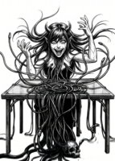
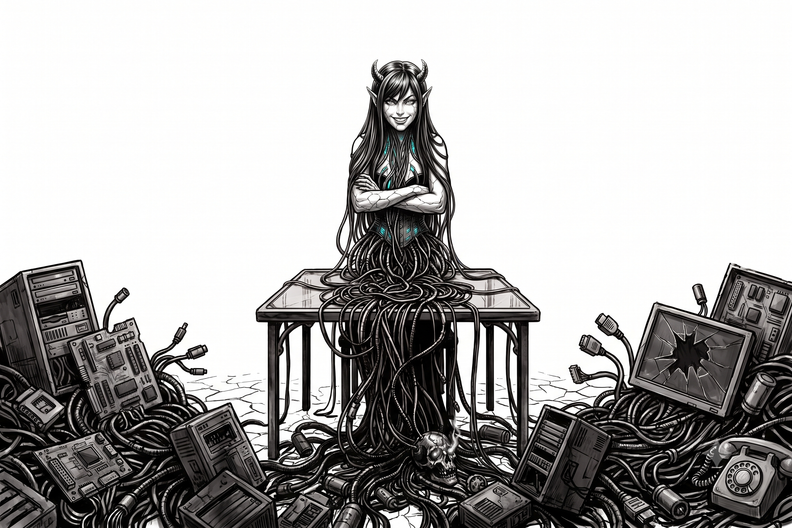
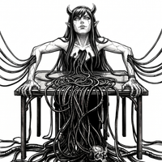
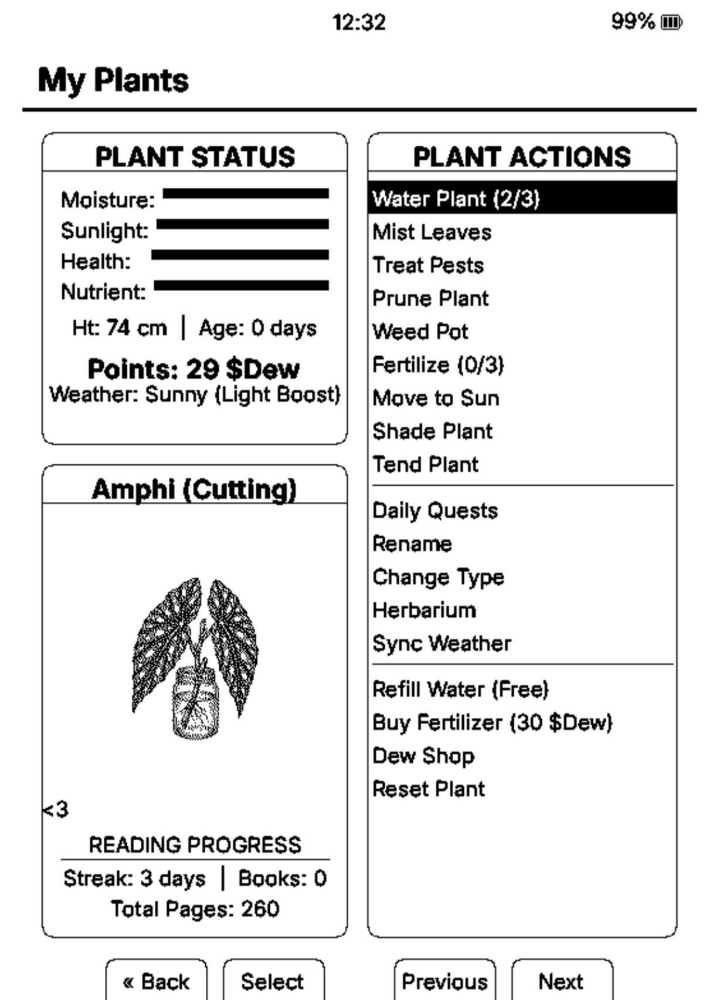
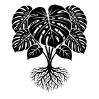

Firmware & Full-Stack
Hi there, I'm 0xKnowles 👋
I love Plants, Tech, and AI. I build custom embedded firmware, e-ink interfaces, and automated cultivation monitors — backed by a background in IT infrastructure and deep experience in Integrated Pest Management (IPM) and greenhouse automation.

Ruby — RF Firmware

CrossPlant — Plant Firmware
whoamiAbout
🚀 Core Stack
TypeScript, React, Angular, Node.js, C/C++, and KiCad for hardware design.
🛠️ Current Focus
Custom embedded firmware optimizations, e-ink interfaces, and automated cultivation monitors.
🌱 Domain Expertise
A strong background in IT infrastructure paired with deep experience in Integrated Pest Management (IPM) and greenhouse automation.
ls ~/projectsFeatured Projects
📡🔒 Ruby Firmware
github.com/0xKnowles/Ruby ↗Custom firmware for the Xteink X3 and X4 e-ink readers that turns the hardware into a stealthy, long-battery-life passive RF signal analyzer — with a small digital companion living in the corner of the screen.
- Passive RF Capture: 802.11 monitor-mode WiFi sniffing (beacons, probe requests, WPA 4-way-handshake detection) plus passive BLE advertisement scanning — receive-only by default, nothing associates, pairs, or transmits.
- Encrypted On-Device Logging: Every observation is deduplicated and independently written to an AES-256-GCM encrypted daily log, decryptable right on the device with no PC required.
- Ruby, the Companion: A small creature reacts with a changing mood as a live front-end for what it's hearing, plus a Level 1-5 badge and header EXP bar tracking lifetime progress from unique devices seen and handshakes captured.
- Opt-in Auditing Tools: Raw
.pcaphandshake export for offline password auditing with hashcat, plus an active-deauth capability gated behind an explicit, off-by-default whitelist/blacklist targeting system.


🌿🐣 CrossPlant Firmware
github.com/0xKnowles/CrossPlant ↗An open-source custom firmware fork for the Xteink X3 and X4 e-ink readers. It merges the advanced typography and performance optimizations of CrossInk with a re-engineered virtual plant companion mechanics system (CrossPet).
- The Virtual Plant System: A reading-driven ecosystem where plant stats (Moisture, Happiness, Health, Discipline) decay in real time while awake, evolving through branches (Scholar 🎓, Balanced ⚖️, or Wild 🌲) based on actual reading habits and streaks.
- Two-Column UI: A space-efficient layout separating plant vitals from detailed reading partner statistics.
- Dew Drops (DD) Economy: Real-time reading reward synchronization (+1 DD per page, +100 DD per book, time-based accumulation) to spend in an interactive item & cosmetic accessory shop.
- Dynamic Canvas Rendering: Pixel-art accessories (Glasses, Wizard Hats, Crowns) scale and render directly on top of the plant's sprite.
- Plant Diary Sleep Screen: A dual-pane standby screen displaying your sleeping plant alongside an RTC-synced daily achievement summary.
- Hardware Optimizations: High-fidelity SD card
.bmpasset probing, custom bezel key long-press shortcuts, and a research-backed typography engine featuring Lexend Deca and Bitter.


🎣 Bio Tackle Box
A dedicated, full-stack application designed for agricultural management. It streamlines digital tracking, workflows, and essential data management for specialized growing environments.
- Stack: TypeScript, React, and Angular framework infrastructure.
💧 HydroLogix — DWC Monitor (Custom Hardware)
An automated Deep Water Culture (DWC) environmental monitor built from the ground up to track real-time reservoir metrics.
- Hardware & Firmware: Custom schematic capture and PCB layout routed entirely in KiCad.
- Features: Utilizes an Elegoo HC-SR04 ultrasonic sensor for precise, real-time liquid-level tracking and environmental telemetry, all housed in a custom-designed, 3D-printed enclosure.
stackTechnical Toolbelt
/dev/hwHardware & Fabrication
PCB Routing & Embedded Design
Multilayer board layouts, physical input re-mapping, low-power display optimization, and hardware interrupt handling.
Rapid Prototyping
3D printing custom mechanical enclosures tailored to exact circuit and button configurations.
Telemetry & I/O
Interfacing custom edge sensor arrays with digital frontend dashboards and embedded UI layouts.